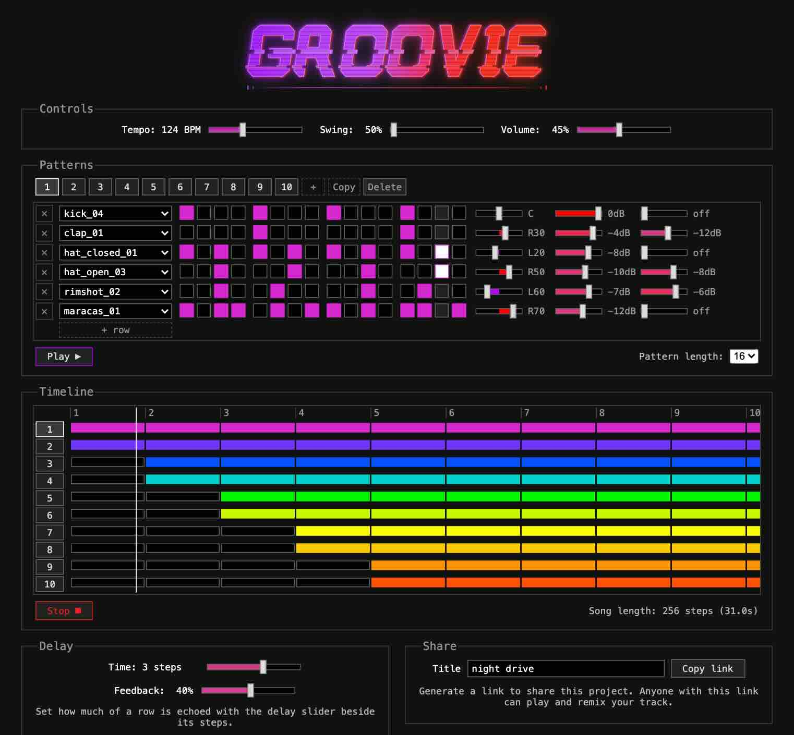
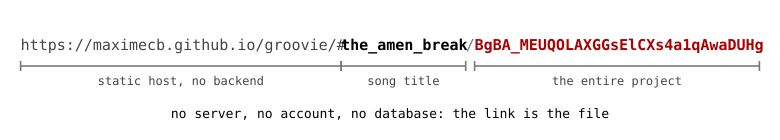
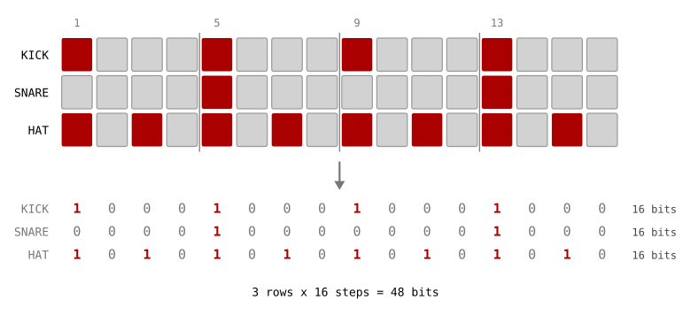
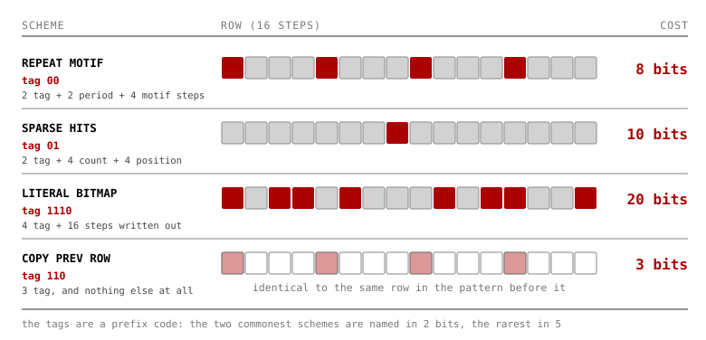
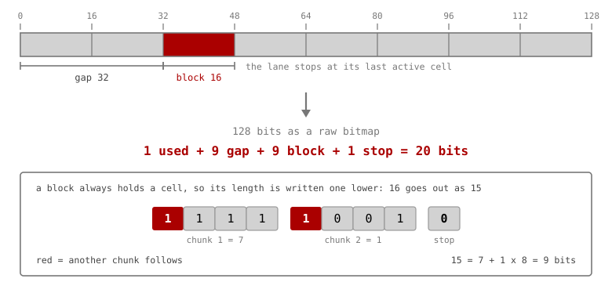

Building Groovie, an Advanced Web-Based Drum Machine / Beat Sequencer

This is a blog post about a new music app called Groovie that I put together over the last few weeks. All the way back in 2012, I built MusicToy, one of the earliest JavaScript music apps on the web. This is a very simple sequencer that uses a pentatonic scale and a few samples. It's designed to be very intuitive for beginners. The reason I say one of the earliest is that this app actually predates the Web Audio API. The first version used the now long-deprecated Mozilla Audio Data API. What's interesting about it though is that MusicToy allows you to share songs without using any kind of backend. It's a fully static website, but it can encode patterns into the hash/fragment part of the URL (a cool, still underrated web trick).
Since then, I've created several more advanced web-based music apps, the most advanced one being NoiseCraft. NoiseCraft has sequencer nodes with multiple selectable patterns. However, it's extremely tedious to build a song from a single long pattern. Something that I've felt was lacking is a way to chain multiple patterns together, in part because it wasn't clear to me back then how to do that cleanly in terms of user interface design. With this project, I wanted to finally tackle that problem.
Groovie is a drum/beat sequencer app that uses samples and has a number of advanced features. I built it because I saw kind of a gap in the market. There are many drum machines out there on the web, but most of them are very basic with a fixed drum kit and a single pattern. Some of them are more advanced, but they're often ad-ridden or require a paid account. The few more advanced ones that don't have those issues often have confusing user interfaces. Groovie has 150+ samples to select from, up to 32 patterns, and a timeline view that allows sequencing multiple patterns over time, and playing multiple patterns at the same time. The patterns can have variable lengths and create polyrhythms. It also has a low-pass/high-pass filter, delay, and per-sample volume and panning, among other features. It does all of this while maintaining a pretty intuitive UI with a responsive layout that's still usable even on a mobile phone, and best of all, it's open source, and free forever.
Here are some example pieces/beats:
Like MusicToy, Groovie is fully static and encodes patterns and projects directly into the fragment part of URLs. However, it's packing a lot more information into that space, with projects that can have up to 32 patterns, selectable samples, and a timeline that can span thousands of steps. As such, I made a genuine effort to be clever with the way this information is encoded. I wanted to target a total link length limit of 2000 chars to keep links shareable on social media platforms and messaging services, or a budget of about 1800 characters for the fragment part. Using a base64url encoding, that leaves us 6 bits of information per character, or 10,800 bits in total. I find that encouraging, because I know from experience that you can actually encode a lot of information in that many bits.
{kind=link}

The song title is encoded in a format that's still human-readable for convenience, with spaces replaced by underscores, and markdown characters intentionally excluded to avoid potential formatting errors when links are included in markdown documents. Groovie's encoding uses 4 bits to write a version number, which means there's room for incrementing this number to add new features or encoding improvements to Groovie without breaking older shared links.
A pattern with one row per sample, and say 16 steps in length, is mostly just a grid, which can be naively encoded as a bitmap. I say naively because if you have 32 samples and 64 steps in length, that's already 2048 bits, meaning we bust the 10,800 bit budget with only a handful of patterns and no other data. We also need to encode the index of the samples for each row, which at the moment I'm using 9 bits for, allowing for up to 512 samples. Then each row can also have stereo panning, volume and effect send settings, which also take a few bits each to encode. The timeline itself can also be essentially represented as a bitmap, with one row per pattern, and one bit for each position where a pattern could be playing or not. Groovie uses a few clever tricks to try to encode this information using far fewer bits than a raw bitmap.
{kind=link}

When trying to optimize something, I think it's very helpful to have a set of benchmarks to give you useful metrics. I used a coding assistant to put together a corpus with about a dozen different songs, as well as a utility script to measure how many bytes are needed to encode each song, along with the total for the whole corpus. What quickly became clear is that most of the data that needs to be encoded is in the patterns. Here there are many tricks that we can use. Patterns are often repetitive, for example with a kick drum that repeats every N steps. They can also be sparse, for example with a cymbal hit that happens only once in a 16-step pattern. Or you can have the same kick drum beat reused in multiple patterns.
What Groovie does here is it uses a few bits, for each row of a pattern, to select among 8 different encoding strategies for that row. A variable-length prefix code is used to encode the strategy. One strategy is to just repeat the same short motif along the whole length of the row. Another is to record the exact position of sparse hits. There is also a fallback to storing a literal bitmap of the row. Then there is another strategy which reuses all of the data from the same row in the previous pattern, along with its sample index and settings, based on the assumption that people are likely to copy patterns while editing their projects.
{kind=link}

Another small optimization in the encoding is the use of gating bits. You can pan samples, adjust their volume, and set the FX send value to enable the delay effect on a per-row basis. However, realistically, most people won't adjust these settings for many or even most samples. We can use a single bit to signify that a setting has its default value, which saves us between 3 and 6 extra bits we would have needed to encode the value. In other words, optimize for the default case.
In order to efficiently encode the timeline, I used a run-length encoding. This works on the assumption that patterns will typically be off for a number of steps, and then on for some number of steps, and off again for a number of steps. For example a specific pattern may only be on for 16 bars out of a 128 bar song. It would be very wasteful to take 128 bits to store that information. Instead we can just store how long the pattern is off, and then how long the pattern is on, in an alternating fashion. The encoding of a row stops after its last active run, meaning we don't need to store any data for the empty space after it. To make this representation compact, variable-length integers are used, with groups of 3 payload bits and one continuation bit.
{kind=link}

A friend of mine is a musician, and one feature he requested after trying the app was the ability to send a MIDI clock signal, which makes it possible to synchronize the drum machine with external music hardware. Fortunately, there is a Web MIDI API, and this is fairly easy to do. The API allows you to schedule message sends at future timestamps, which means that the clock signal can be kept in sync, even though JavaScript runs everything on the main thread. The same callback that takes care of scheduling sample playback every 100ms takes care of scheduling MIDI clock pulses. I've been able to test that this works reliably on my laptop with a Behringer TD-3 synthesizer (a TB-303 clone). The Web MIDI API is supported on Chrome/Chromium, but sadly not on Safari. It's also much more annoying to get working on Firefox due to terrible Mozilla decision making, requiring users to manually install a plugin to enable Web MIDI support for each website.
I hope that you enjoy playing with this drum machine as much as I do. I'm very happy with the way it sounds, and the fact that it's usable even on a mobile phone. Groovie is on GitHub. I'd like to invite pull requests for new samples, with the caveat that those need to be public domain / uncopyrighted / CC0 to make it safe to distribute them with the app. The app could use more percussive sounds, environmental sounds, metallic sounds, and vocal one-shots. One possible source of samples could be movies, songs and games that are out of copyright. You can also record synths or things around your house and contribute that if you want to. I'm also very curious to hear any beat or track you create with Groovie. Please share the links, and I'll add them to Groovie's corpus.